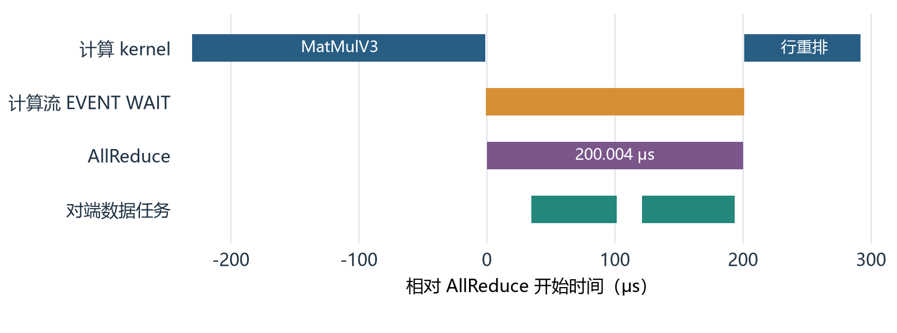
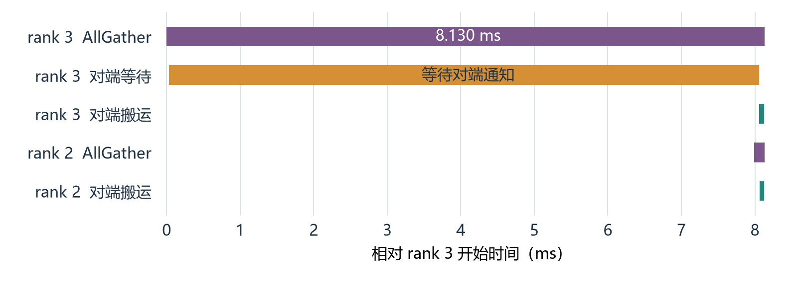

全程导览
一行 token 数据怎样走完全程？
提示词先拆成 token。每个 token 用一行数表示，这行数在层间更新，称为隐藏状态。
先把输入行和缓存位置准备好，再让隐藏状态经过 48 层。最后，输出头把隐藏状态变成词表里各个 token 的分数，采样选出本轮输出。
一次 prefill 段可以处理多个请求的一部分。这里跟踪的是一段真实前向。
查看输入准备从输入到采样
- 输入整理 token、位置和缓存槽位
- 48 层主干每层先处理上下文，再由专家处理当前表示
- 输出头恢复行顺序，计算并拼齐词表分数
- 采样从词表分数选出 token，更新请求状态
全程导览
两张卡为什么要交换数据？
四个 DP 组各处理自己的批次。组内的两张卡用 PCP2 合作处理同一段 token。
先认清 rank
rank 是卡的编号。以 rank 0 和 rank 1 为例，两端参与同一笔集合通信，各自留下一个计时区间。
两种最常见的需求
A 有 [a, c]，B 有 [b, d]。两端都收齐四行，再用本地索引恢复 [a, b, c, d]。
A 算出 [2, 5]，B 算出 [3, 7]。归约后，两端都得到 [5, 12]。
字母和数字用于示意。下一页进入第 1 层的实际张量。
逐层前向
第 1 层：先收齐行，再汇总结果
GDN 沿 token 顺序做卷积和状态递推。两卡先恢复整段的行，输出投影之后再合并两卡的部分和。
第 1 笔 · AllGather
每卡有 2,048 行，每行 2,560 个 BF16 元素。先跨卡收齐，再由本地行重排 kernel 恢复输入顺序。
第 2 笔 · AllReduce
MatMulV3 产生 4,096 × 2,560 个局部投影元素。两卡求和，再选回本卡负责的 2,048 行。
展开第 1 层一层 GDN 的数据变化
- 本卡隐藏状态2,048 × 2,560
- 收齐并恢复全段AllGather · 每端输入 10 MiB
- 卷积、递推和局部输出投影两卡各自得到部分和
- 汇总后取回本卡行AllReduce · 每端输入 20 MiB
逐层前向
第 4 层：三笔 AllGather 各传什么？
每逢第 4 层，QSA 先挑出需要读取的历史块，再做稀疏注意力。前两笔服务于索引器，第三笔服务于主注意力。
实测每卡输入
| 序号 | 收齐的数据 | 大小 |
|---|---|---|
| 8 | 索引器的键（BF16） | 512 KiB |
| 9 | 每个 token 的三个位置坐标（INT64） | 48 KiB |
| 10 | 打包的主注意力 K/V（BF16） | 4 MiB |
每轮有 12 个 QSA 层，各发生这三类通信。
逐层前向
每层都会经过一次专家计算
路由器为 token 选出专家。专家分布在 8 张卡上，选中的专家可能位于另一张卡。
MegaMoe 的内部路径
token 发往专家所在卡，专家完成计算，再把结果汇回。当前 trace 将这些阶段记录为一个融合 kernel。
每次能读到整核的起止；要测内部分发与专家计算重叠多久，还需要各阶段的独立时间戳。
查看 MegaMoe 的实际调用从一次前向看融合边界
- MoeGatingTopK选择专家及其权重
- MegaMoe分发 token、专家计算、回收结果
- 后续分支与残差合并更新隐藏状态，继续下一层
一轮 48 次。正式 20 秒内，八卡记录到 14,392 个 MegaMoe 实例。
逐层前向
走出第 48 层，拼齐词表分数
第 107–109 笔属于最后一个 QSA 层。接下来的两笔发生在模型输出阶段。
第 110 笔 · 恢复隐藏状态
两卡各提交 10 MiB 隐藏状态。收齐后按请求恢复行顺序，选出要计算词表分数的行。
第 111 笔 · 拼齐词表
样例中，每卡投影得到 124,160 个 BF16 分数。两端按词表维度拼接后，进入采样。
查看输出和采样一轮显式集合通信的总账
| 位置 | 笔数 |
|---|---|
| 36 个 GDN 层 | 36 × 2 = 72 |
| 12 个 QSA 层 | 12 × 3 = 36 |
| 第 2 层 PLE | 1 |
| 模型输出端 | 2 |
| 合计 | 111 |
48 次融合专家调用单独记录，内部传输笔数未知。
通信瓶颈
通信期间，计算流在做什么？
以 rank 0 的 opId 375 为例。第 19 层的输出投影结束后，计算流进入 EVENT WAIT，直到 AllReduce 完成。
同一张卡 · 同一条时间轴

横轴相对通信开始时刻；蓝色表示计算，紫色表示集合通信。
通信瓶颈
为什么同一笔通信，两端相差 8 毫秒？
最长的一次 AllGather 发生在第 1 层的输入端。rank 3 比 rank 2 提早约 7.993 ms 进入同一笔通信。
DP 组 1 · opId 1665

83 条达到 1 ms 的卡侧记录中，80 条出现在所在前向段的第一笔。
查阅明细
从一层、一个算子或一笔通信开始查
选取一个真实调用，看它在模型的哪里发生，以及两张卡分别花了多少时间。